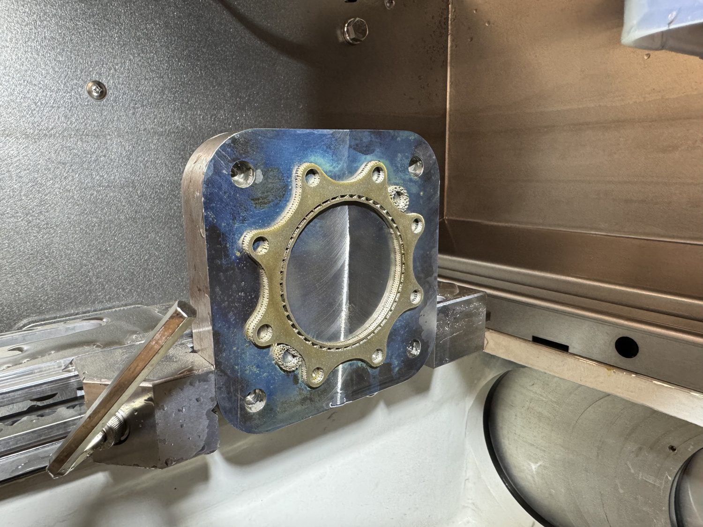

Timeline
Project Development
This entry is inferred from the existing media, which shows an EDM setup part from multiple angles and a fixture plate installed in the machine. I treated it as a setup and workholding project that connects conventional machining preparation with EDM setup. The core story is process control: install the fixture plate, prepare or verify the setup part, and make the workholding repeatable enough for the next machining operation. Exact part purpose, operation sequence, datum scheme, and inspection results are still TBD.

-
Setup planning
Planned the Fixture Plate Setup
Prepared the setup around a fixture plate so the part could be located for the next machining operation.
- The fixture plate installation photo indicates the workholding system is the core setup element.
- The project appears to connect milling preparation with an EDM operation.
- Exact datum scheme and operation sequence are TBD.
-
Build/setup
Prepared the Setup Part
Documented the machined setup part before the EDM operation.
- The part images show the workpiece prepared for fixturing or EDM work.
- Setup appears to prioritize access, location, and process repeatability.
- Part function and final inspection requirements are TBD.
-
Verification
Verified Workholding Readiness
Confirmed the fixture plate and setup part were ready for the downstream EDM workflow.
- The media supports a setup-readiness story more than a final-part story.
- TBD: add final EDM operation images if this setup produced a finished part.
- TBD: add tolerance, repeatability, or setup-time notes when available.